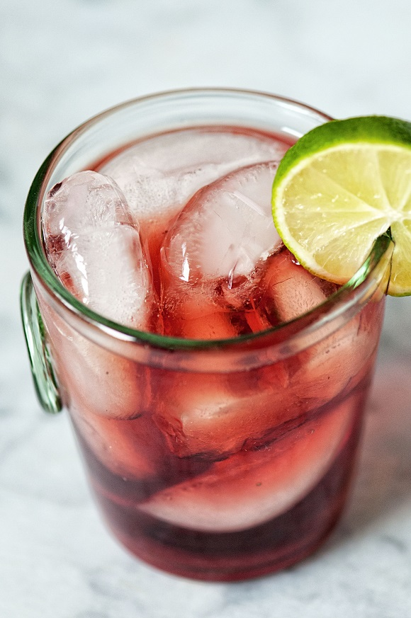

Washington Apple Cocktail

Ingredientes
- 2 onças fluidas de uísque
- 1 ½ onças fluidas de suco de cranberry
- 1 onça fluida de aguardente de maçã azeda (como DeKuyper® Sour Apple Pucker)
- 1 colher de chá de néctar de agave
- cubos de gelo conforme necessário
- 2 fatias de maçã para decorar
Return